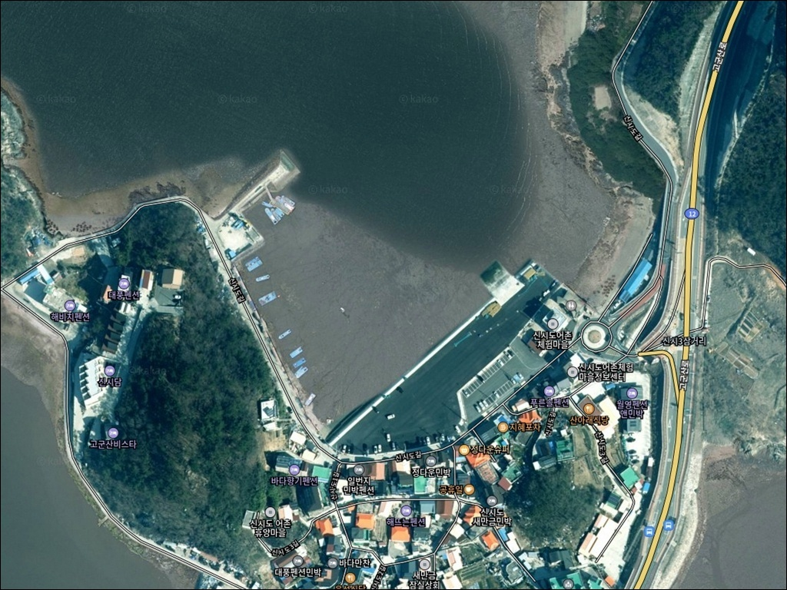
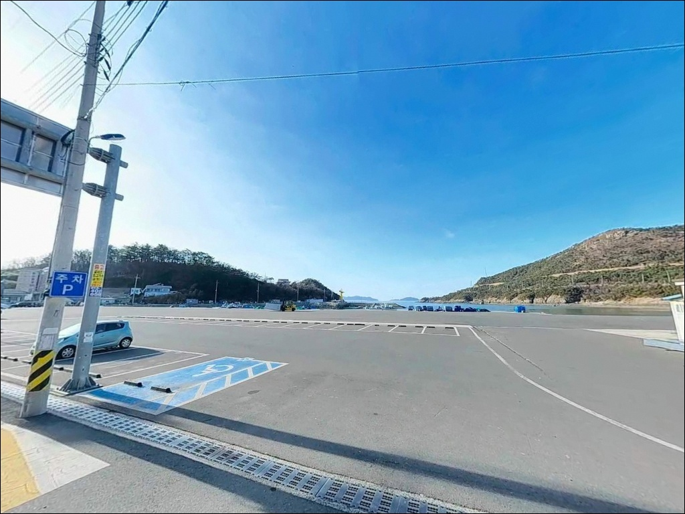
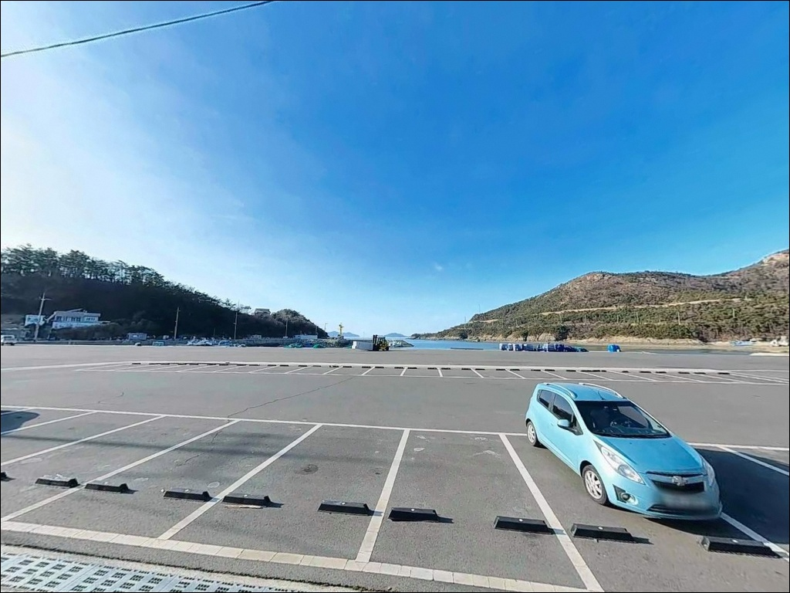
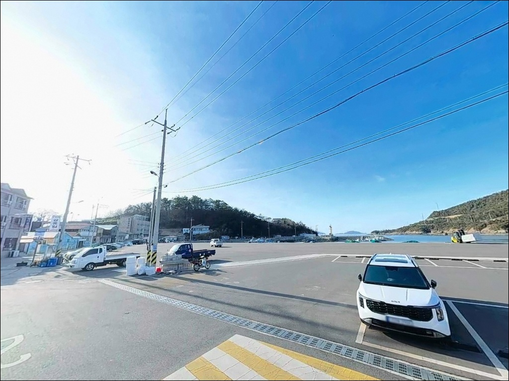
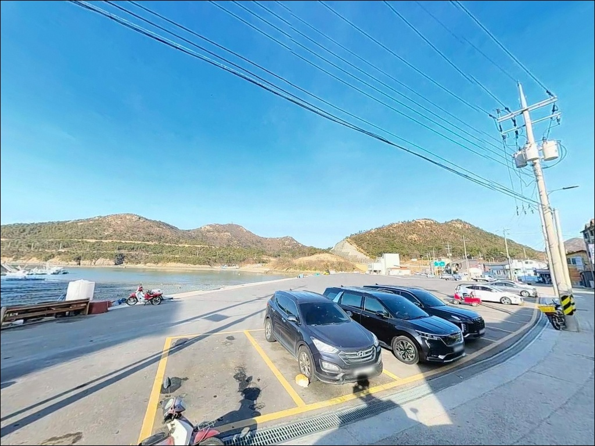
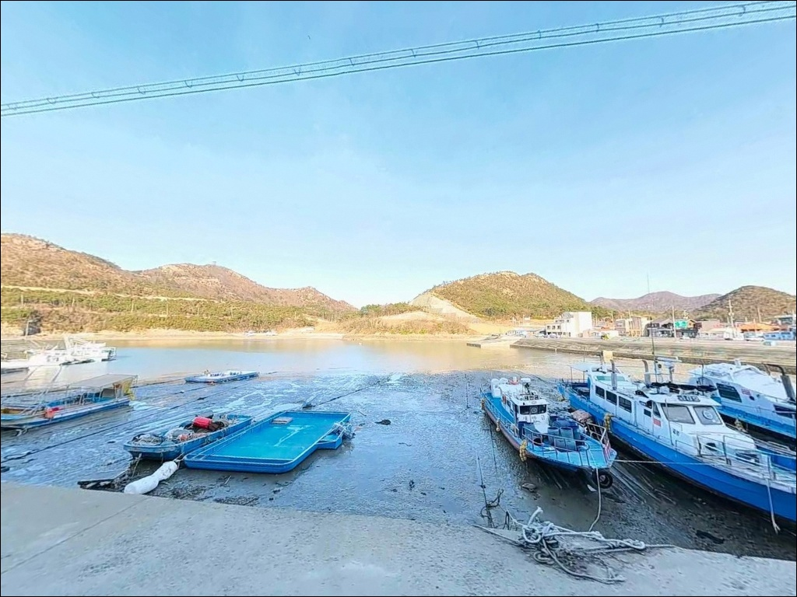
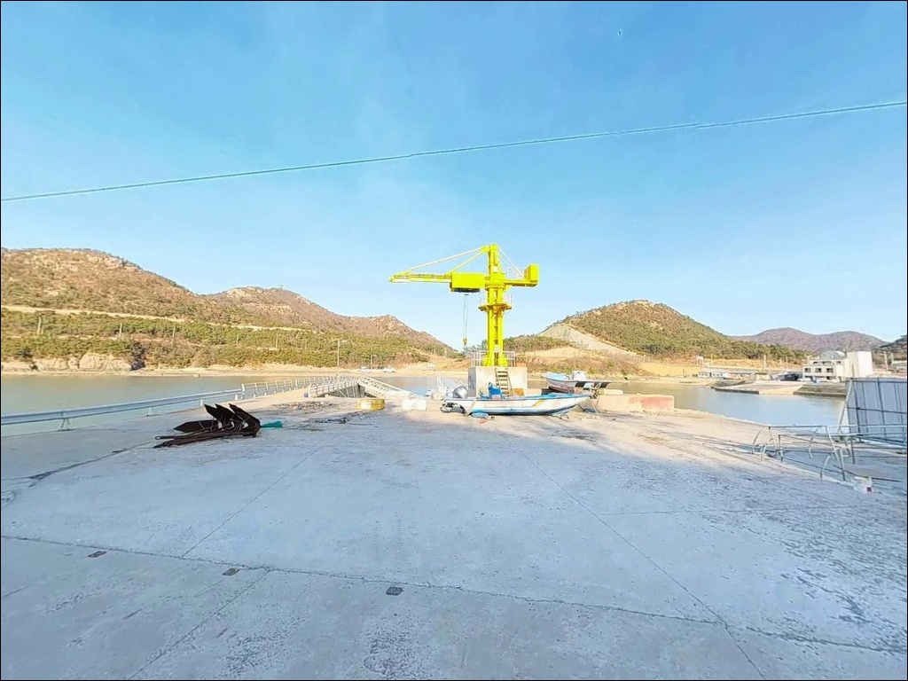
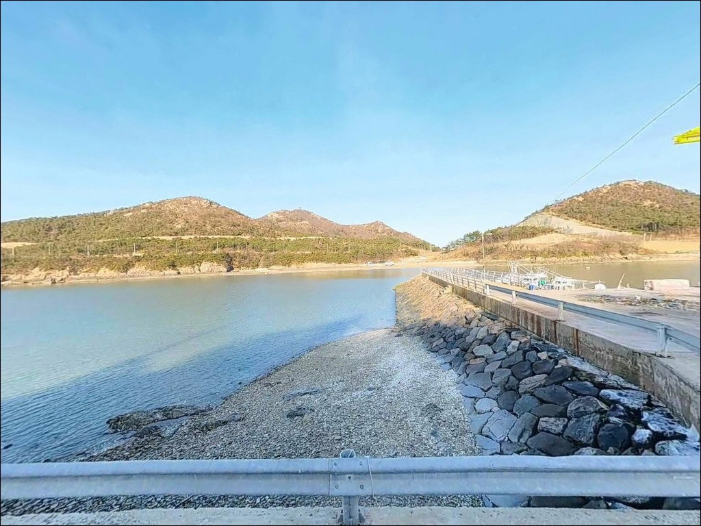
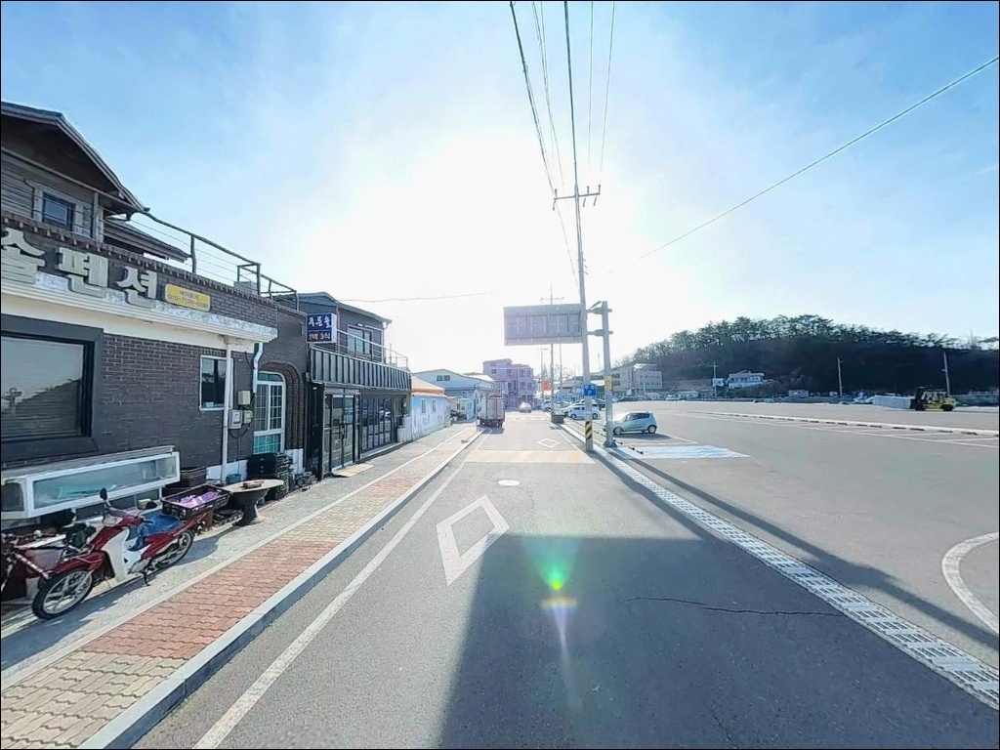

신시도어촌체험마을, 신시도 전북 군산시 자연의 여백을 느낄 수 있는 차박, 낚시 명소
이 페이지에는 광고(제휴 링크 포함)가 있으며, 광고 링크를 통해 구매하면 운영자가 판매 수익 또는 수수료를 받을 수 있습니다. 포인트 사진: 카카오맵 스카이뷰·로드뷰. 이 페이지의 지도·사진 이미지는 카카오맵의 실제 서비스 이미지와 다를 수 있습니다.


포인트 안내
신시도어촌체험마을
전북 군산시 옥도면 신시도리 248
새만금방조제를 건너 신시도에 들어와도,
어촌체험마을 선착장과 북단 방파제가
섬 안에서 수 킬로미터 이상 떨어진
별개 포인트라는 사실을 모르고 진입하면
목적지 자체를 잘못 찾게 됩니다.
방파제에 겨우 도착했더라도
물때를 확인하지 않고 사리 전후에 들어서면,
조류 유속이 한계치를 넘어 채비 컨트롤 자체가
불가능해지는 구조입니다.
이 글은 신시도의 두 낚시 구역 구분,
진입 동선, 물때 판단 기준,
낚시 스타일별 공략 조건에 집중합니다.
조황 단정이나 특정 어종 보장은
이 글의 범위에 포함되지 않습니다.

1. 진입 동선과 포인트 위치 파악
신시도는 새만금방조제를 통해
차량으로 직접 진입 가능한 섬입니다.
비응도 방면 방조제 끝단에서
야미도를 경유해 약 2.7km를 더 이동하면
신시도에 닿는 구조로,
포장도로가 이어져 차량 진입 자체는 수월합니다.
중요한 것은 섬 안의 두 포인트를
출발 전에 구분해 두는 일입니다.
어촌체험마을 선착장은 섬 남동쪽에 위치한
갯벌·모래 저질 중심의 완만한 수심 구역이고,
신시도 북단 방파제는 새만금방조제 진입부와
가장 가까운 섬 북쪽 끝에 따로 위치합니다.
두 지점은 섬 내에서 운전으로도 수 분이 걸리는
별개 낚시 구역입니다.
주차는 어촌체험마을 기준으로
소형 30대, 대형 10대 규모의 주차장이
한국관광공사 공공데이터로 확인됩니다.
대형 SUV나 루프탑 차량의 회차 여건도
비교적 양호한 편입니다.
북단 방파제 쪽은 물 앞 주차 공간이
존재하는 것으로 전해지나,
현장 도착 후 여건을 직접 확인하는 것이
안전합니다.

2. 차박 환경과 야간 체류 여건
어촌체험마을 주차장은 소형 30대,
대형 10대를 수용하는 확정 시설로,
낚시 차박의 베이스캠프 기점으로 활용하기에
고군산군도 내 가장 안정적인 주차 여건 중 하나입니다.
다만 체험 프로그램 운영 시간대에는
체험객 차량과 혼재하는 구조이므로,
낚시 중심 차박 목적이라면
프로그램이 없는 시간대를 기준으로
입장 계획을 세우는 편이 현실적입니다.
마을 중심부는 어촌 취락 특성상
야간 통행량이 적어
프라이버시는 상대적으로 양호한 환경입니다.
다만 고군산군도 특성상
외해 방향 바람 영향을 받는 구간이 있어
출발 전 기상 예보 확인은 필수입니다.
섬 전체가 완전 자급 체제를 요구하는 구조이므로,
방조제 진입 전 비응도 초입에서
식수·연료·낚시 소품을 완비하고
들어오는 것이 기본 준비입니다.


3. 주변 편의시설 및 인프라 현황
신시도는 섬이라는 특성상
편의점·마트·낚시점이 전무한 지역입니다.
비응도 초입에서 완벽하게 준비하고
방조제를 건너야 한다는 것이
낚시 전문 매체 기록으로도 확인됩니다.
얼음·식수·미끼·여분 채비·연료는
모두 진입 전에 갖춰야 합니다.
어촌체험마을은 연 중 바지락 캐기 체험을 운영하며,
낚시 체험 프로그램은 4~6월과 8~10월에 진행됩니다.
낚시 도구는 개별 준비가 원칙이며,
운영 여부는 방문 전 마을로
직접 확인하는 편이 안전합니다.
연락처: 063-463-7088
국립신시도자연휴양림이 어촌체험마을에서
약 2km 거리에 자리해 있어,
낚시 후 산책·휴식을 겸하는 일정과
연계하기 좋은 거점이기도 합니다.
반경 10km 권역으로 이동하면
고군산군도 내 선유도·무녀도 방면에서
섬 간 다양한 낚시 포인트로
이어지는 동선을 구성할 수 있습니다.

4. 물때 모르면 낚시 못 하는 서해 구조 — 진입 전 준비
신시도 방문에서 가장 먼저 결정해야 할 것은
물때입니다.
고군산군도 해역은 섬이 많아
조류 방향이 분리·합류를 반복하는 복잡한 구조로,
창조류는 북동류, 낙조류는 남서류로 흐르며
최강 창낙조 유속은 약 2.6kn에 이릅니다.
바다타임에서 신시도 기준 물때를
출발 전날 확인하고, 들물 전후를
기본 진입 타이밍으로 잡는 것이 출발 조건입니다.
목적지도 출발 전에 확정해야 합니다.
어촌체험마을 선착장인지,
북단 방파제인지를 미리 정하지 않으면
섬 안에서 이동 시간을 소비하게 됩니다.
채비 손실도 잦은 지형이므로
여분 채비는 넉넉하게 챙겨두는 편이 낫습니다.
방조제 구간에서의 낚시는 금지되어 있으므로
해당 구간에서 채비를 던지는 행위는
반드시 피해야 합니다.
고군산군도 해역은 안개가 자주 발생하는 곳으로
기상청 해상 예보를 당일 아침 다시 한번 확인하는 것이
포인트 낭비를 막는 조건입니다.
야간 낚시라면 헤드랜턴·구명조끼·
미끄럼 방지 신발까지 기본 장비로 챙겨야 합니다.

5. 지형 기반 낚시 여건 분석
신시도는 고군산군도 24개 섬 가운데
가장 큰 섬으로 면적 4.25km²,
해안선 16.5km의 규모입니다.
어촌체험마을 선착장이 자리한 남동쪽은
바지락 체험이 가능할 만큼
갯벌·모래 저질로 이루어진 완만한 수심 구조입니다.
선착장 내항 쪽은 조류가 완만하고,
외항 방향은 고군산군도 수도(水道)와
맞닿아 조류 영향이 상대적으로 강합니다.
북단 방파제는 지형 성격이 다릅니다.
바다타임 공식 데이터 기준으로
이 구역 수심은 2.7~4m,
저질은 모래·펄 혼합 구조입니다.
방파제 좌측 갯바위 구간은 도보로 연결되며
만조 수심이 7~8m에 이르고,
수중여가 발달한 루어낚시 적합 지형으로
낚시 전문 매체에도 기록되어 있습니다.
가로등이 설치되어 야간 발판 확보도 가능합니다.
고군산군도 해역은 창낙조 최강 유속이 2.6kn에 이르러,
물때 판단 없이 진입하면 채비 컨트롤이 어려운 구조입니다.
들물 전후가 공략 타이밍 기준이며,
정조 타이밍을 먼저 계산하고 입장하는 것이
이 해역을 제대로 공략하는 방법입니다.
출조 전 최신 조황은 꼭 검색해 보시기 바랍니다.


6. 포인트에 어울리는 낚시 스타일
신시도 방파제 갯바위 구간은 만조 수심 7~8m에
수중여가 발달해, 루어낚시로 농어와 우럭을
탐색하기 좋은 지형 조건을 갖추고 있습니다.
그럽웜·미노우·지그헤드 조합으로
갯바위 연결 구간과 방파제 석축 주변을
천천히 탐색하는 방식이 어울립니다.
들물 타이밍에 외항 방향으로 루어를
보내는 운용이 이 포인트 구조에 맞습니다.
원투낚시는 어촌체험마을 선착장 구역에
더 잘 맞는 스타일입니다.
갯벌·모래·펄 저질 구간은
넙치·도다리 계열을 노리는 원투 채비가
유효한 지형 조건을 갖추고 있습니다.
간조 타이밍에 바닥 지형을 파악해 두고
들물에 채비를 멀리 보내는 방식이
이 지형에서 검증된 운용법입니다.
릴찌낚시는 방파제 석축 근거리에서
우럭·노래미를 노리는 스타일로 잘 맞습니다.
8물~10물 사이 야간 입장이
마릿수 면에서 유리한 편으로 전해집니다.
에깅은 늦여름에서 가을 시즌에
갑오징어와 주꾸미를 대상으로
선착장 외항 방향과 갯바위 근처에서
시도해 볼 수 있는 구조입니다.

7. 대안 포인트와 플랜 B 동선
신시도 조류가 너무 강하거나
자리 여건이 여의치 않을 때는
야미도 선착장과 갯바위가 첫 번째 대안입니다.
신시도에서 약 2.7km 거리로
이동이 빠르며, 감성돔·우럭 포인트로
알려진 구역입니다.
한적함을 원하면 신시도,
조과 실적을 우선하면 야미도라는
구도로 선택하는 것이 고군산군도에서
현지 낚시인들이 쓰는 방식이기도 합니다.
더 넓은 범위로 이동한다면
선유도·무녀도·장자도 방파제군이
고군산군도 내 대표 낚시 라인을 형성합니다.
각 섬 방파제마다 지형 성격이 달라
당일 조류 조건에 맞게
이동 포인트를 선택하는 방식이 효율적입니다.
출발 전 고군산군도 인근 포인트 동선을
지도로 미리 확인해 두면
현장에서의 판단 속도가 달라집니다.
신시도를 처음 방문한다면
어촌체험마을 주차장을 기점으로 삼고
북단 방파제를 병행 탐색하는 동선이
가장 효율적인 구성입니다.
여건이 맞지 않으면 야미도로
이동하는 플랜 B를 미리 정해두고
출발하는 편이 좋습니다.

물때와 목적지를 알면
신시도가 달라 보입니다
루어·원투·릴찌를 복합으로 운용하는
낚시인이라면 신시도의 지형 구조는
잘 맞는 편입니다.
어촌체험마을 선착장 구역과
북단 방파제 갯바위 구간이
서로 다른 스타일을 소화할 수 있어,
하루 동선 안에서 두 구역을 모두
탐색해 보는 방식도 가능합니다.
반면 물때 확인 없이 사리 전후에 진입하거나,
어촌체험마을과 북단 방파제를
같은 구역으로 착각하고 들어오면
이동 시간만 소비하게 됩니다.
물때 확인, 목적지 구분, 완전 자급 준비,
이 세 가지를 갖추고 신시도에 들어오면
고군산군도에서 기억에 남는 조행이
될 수 있는 포인트입니다.
어촌 마을 주차장을 기점으로 삼고
방파제에서 밤낚시 한 판 펼치는
차박 낚시 여정을 구상하는 분이라면,
비응도에서 준비를 마치고
방조제를 건너는 그 순간부터가
이미 이 포인트의 시작입니다.